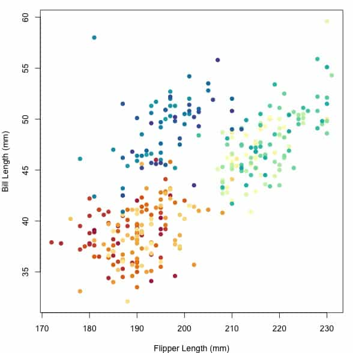
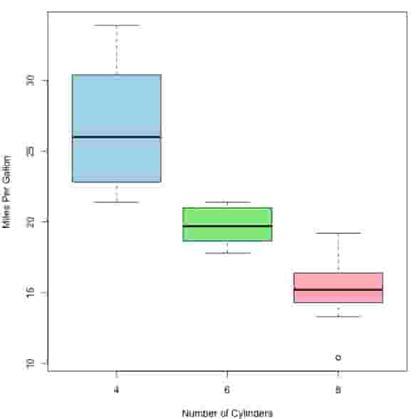
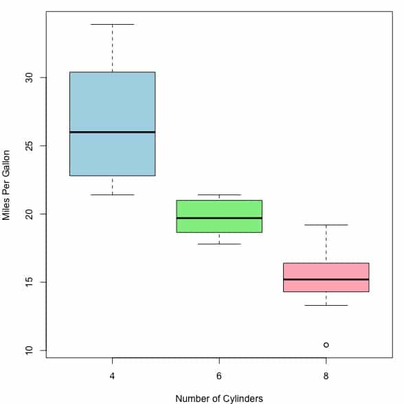
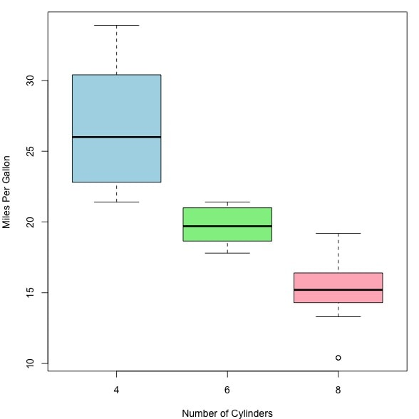
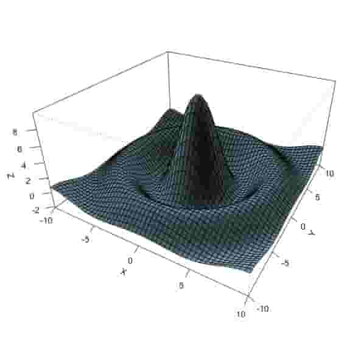
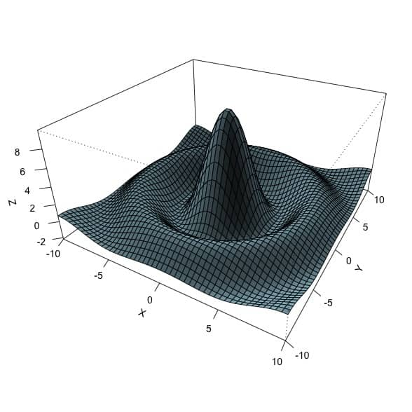
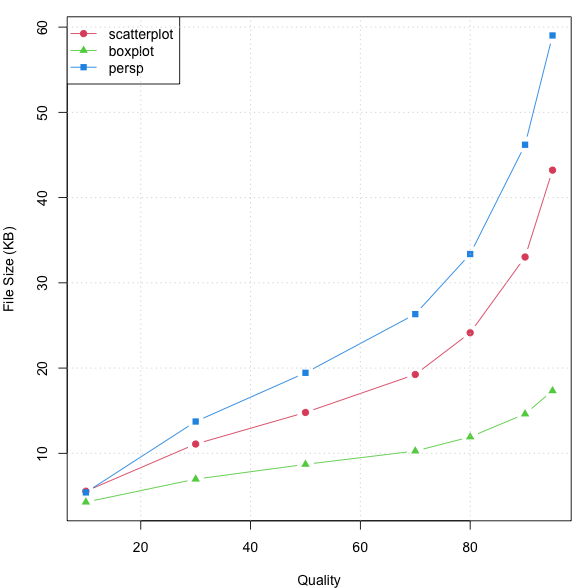
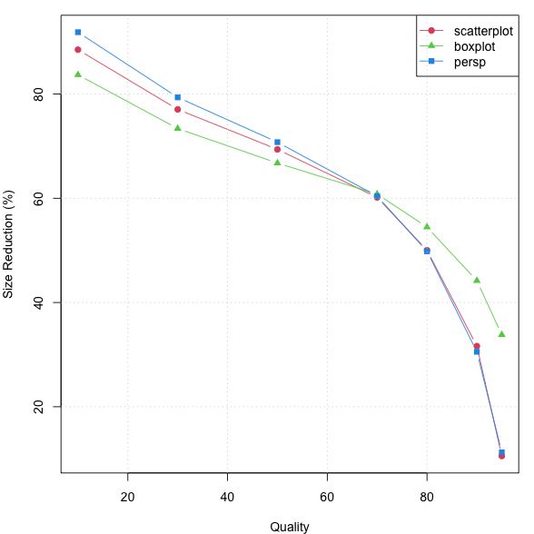
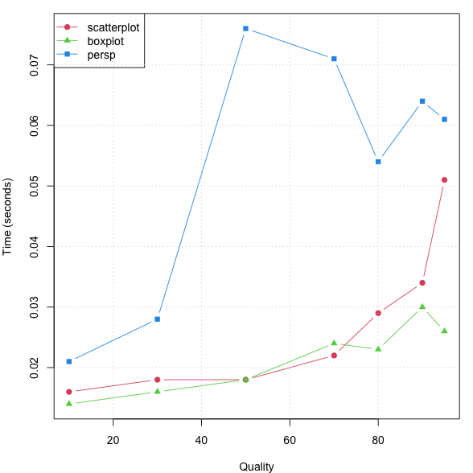

tinyjpg() BenchmarksThis document benchmarks the tinyjpg() function from the tinyimg package
across different quality levels. We test with three types of plots:
For each quality level, we measure:
First, we create test plots using the jpeg() device (set as default via the chunk option
dev = 'jpeg'):
1 Penguin bill length vs flipper length.
2 Miles per gallon by cylinder count.
3 A complex 3D surface defined by the function sin(r)/r.
Now let’s optimize these JPEG files at different quality levels and measure the results:
#> scatterplot-1.jpeg -> scatterplot_q10.jpg | 48.3 KB -> 5.6 KB (-88.5%)
#> scatterplot-1.jpeg -> scatterplot_q30.jpg | 48.3 KB -> 11.1 KB (-77.0%)
#> scatterplot-1.jpeg -> scatterplot_q50.jpg | 48.3 KB -> 14.8 KB (-69.4%)
#> scatterplot-1.jpeg -> scatterplot_q70.jpg | 48.3 KB -> 19.2 KB (-60.2%)
#> scatterplot-1.jpeg -> scatterplot_q80.jpg | 48.3 KB -> 24.1 KB (-50.0%)
#> scatterplot-1.jpeg -> scatterplot_q90.jpg | 48.3 KB -> 33.0 KB (-31.6%)
#> scatterplot-1.jpeg -> scatterplot_q95.jpg | 48.3 KB -> 43.2 KB (-10.5%)
#> boxplot-1.jpeg -> boxplot_q10.jpg | 26.2 KB -> 4.3 KB (-83.7%)
#> boxplot-1.jpeg -> boxplot_q30.jpg | 26.2 KB -> 7.0 KB (-73.4%)
#> boxplot-1.jpeg -> boxplot_q50.jpg | 26.2 KB -> 8.7 KB (-66.8%)
#> boxplot-1.jpeg -> boxplot_q70.jpg | 26.2 KB -> 10.3 KB (-60.8%)
#> boxplot-1.jpeg -> boxplot_q80.jpg | 26.2 KB -> 11.9 KB (-54.5%)
#> boxplot-1.jpeg -> boxplot_q90.jpg | 26.2 KB -> 14.6 KB (-44.2%)
#> boxplot-1.jpeg -> boxplot_q95.jpg | 26.2 KB -> 17.3 KB (-33.8%)
#> persp-1.jpeg -> persp_q10.jpg | 66.5 KB -> 5.4 KB (-91.9%)
#> persp-1.jpeg -> persp_q30.jpg | 66.5 KB -> 13.7 KB (-79.4%)
#> persp-1.jpeg -> persp_q50.jpg | 66.5 KB -> 19.4 KB (-70.8%)
#> persp-1.jpeg -> persp_q70.jpg | 66.5 KB -> 26.3 KB (-60.4%)
#> persp-1.jpeg -> persp_q80.jpg | 66.5 KB -> 33.4 KB (-49.8%)
#> persp-1.jpeg -> persp_q90.jpg | 66.5 KB -> 46.2 KB (-30.5%)
#> persp-1.jpeg -> persp_q95.jpg | 66.5 KB -> 59.0 KB (-11.3%)
| Plot | Quality | Size_KB | Reduction_pct | Time_sec |
|---|---|---|---|---|
| scatterplot | 10 | 5.554 | 88.506 | 0.016 |
| scatterplot | 30 | 11.089 | 77.050 | 0.018 |
| scatterplot | 50 | 14.794 | 69.382 | 0.018 |
| scatterplot | 70 | 19.247 | 60.165 | 0.022 |
| scatterplot | 80 | 24.142 | 50.035 | 0.029 |
| scatterplot | 90 | 33.031 | 31.637 | 0.034 |
| scatterplot | 95 | 43.222 | 10.546 | 0.051 |
| boxplot | 10 | 4.273 | 83.682 | 0.014 |
| boxplot | 30 | 6.974 | 73.371 | 0.016 |
| boxplot | 50 | 8.707 | 66.752 | 0.018 |
| boxplot | 70 | 10.266 | 60.801 | 0.024 |
| boxplot | 80 | 11.923 | 54.473 | 0.023 |
| boxplot | 90 | 14.616 | 44.188 | 0.030 |
| boxplot | 95 | 17.334 | 33.811 | 0.026 |
| persp | 10 | 5.413 | 91.861 | 0.021 |
| persp | 30 | 13.729 | 79.358 | 0.028 |
| persp | 50 | 19.445 | 70.764 | 0.076 |
| persp | 70 | 26.329 | 60.414 | 0.071 |
| persp | 80 | 33.379 | 49.815 | 0.054 |
| persp | 90 | 46.200 | 30.538 | 0.064 |
| persp | 95 | 59.020 | 11.264 | 0.061 |
A visual comparison of the quality optimization results:
scatterplot
quality = 10
Reduction: 88.51%
quality = 30
Reduction: 77.05%
quality = 50
Reduction: 69.38%

quality = 70
Reduction: 60.17%
quality = 80
Reduction: 50.04%
quality = 90
Reduction: 31.64%
quality = 95
Reduction: 10.55%
boxplot
quality = 10
Reduction: 83.68%

quality = 30
Reduction: 73.37%
quality = 50
Reduction: 66.75%

quality = 70
Reduction: 60.80%
quality = 80
Reduction: 54.47%
quality = 90
Reduction: 44.19%

quality = 95
Reduction: 33.81%
persp
quality = 10
Reduction: 91.86%

quality = 30
Reduction: 79.36%
quality = 50
Reduction: 70.76%
quality = 70
Reduction: 60.41%

quality = 80
Reduction: 49.81%
quality = 90
Reduction: 30.54%
quality = 95
Reduction: 11.26%

4 File size vs quality level.

5 Size reduction percentage vs quality level.

6 Processing time vs quality level.